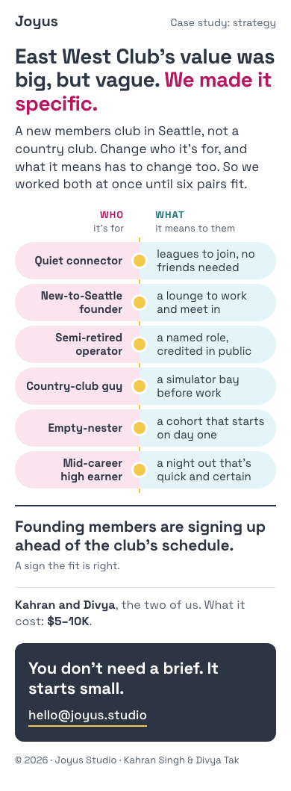
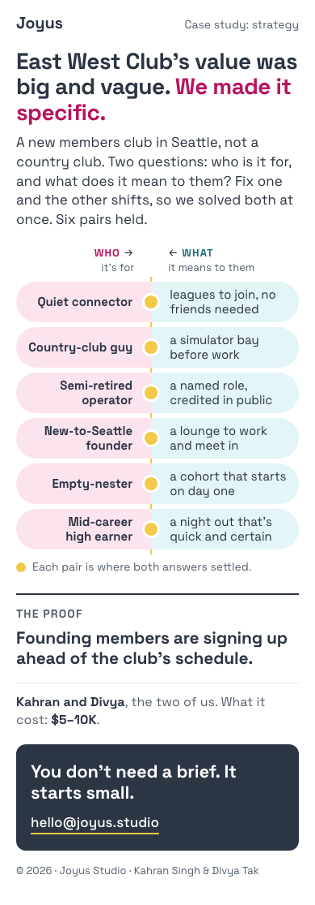
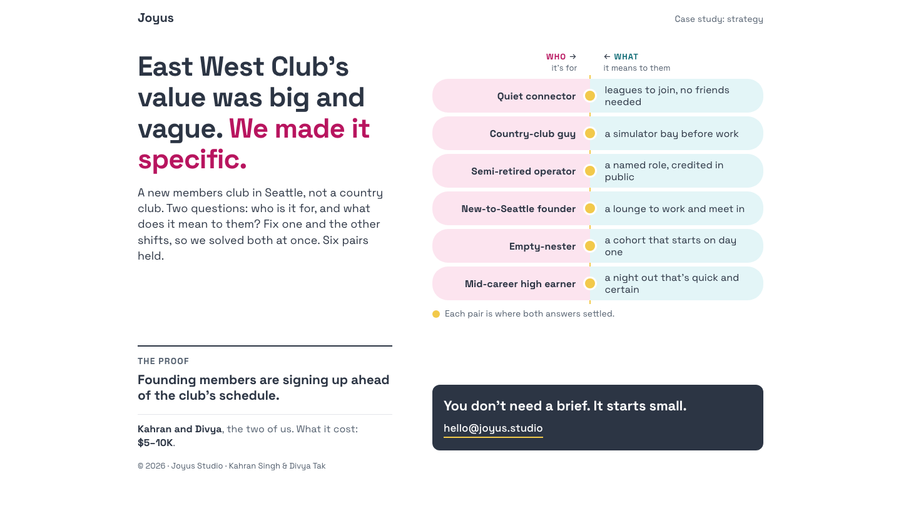
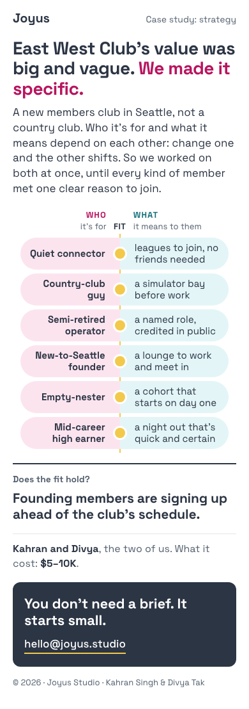
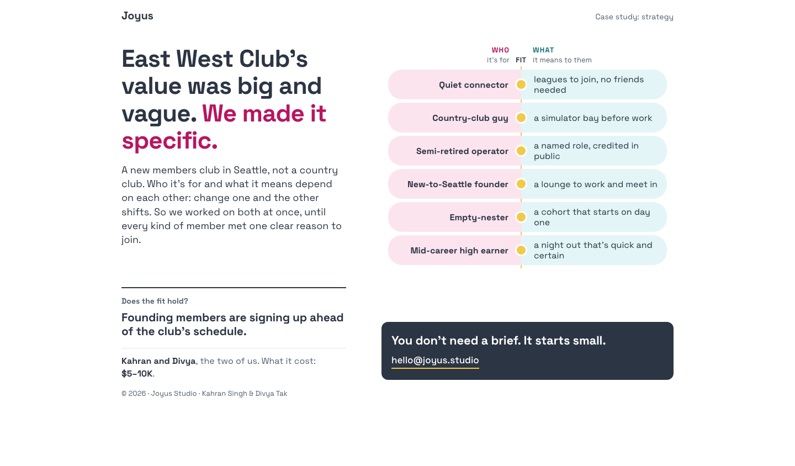
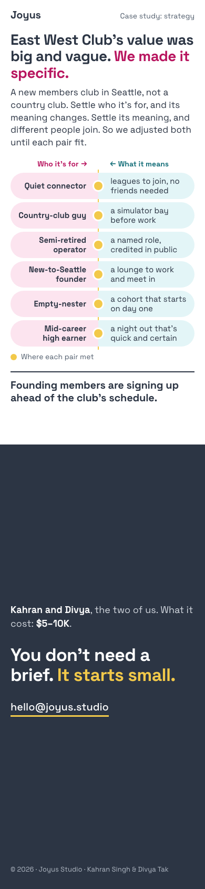
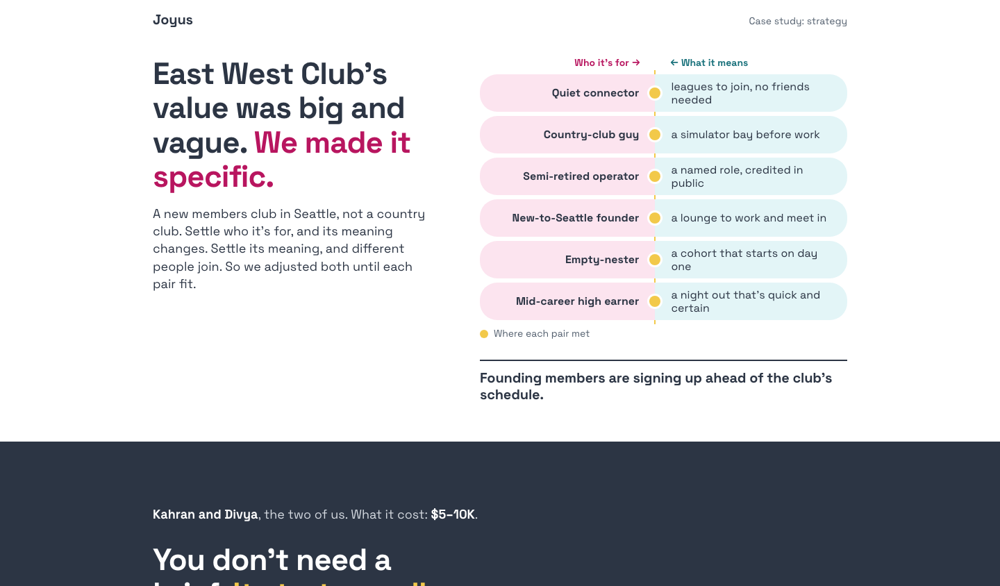

Study 91 · 8 November 2026 · for Kahran
EWC, arrived at: 90 a without the figure, four ways
Kahran chose 90 a, The seam's direction, and said of its percentage: drop it. A new brief (brief.md) keeps 90 a's words and layout and asks for two changes only: the proof becomes one plain line (founding members are signing up ahead of the club's schedule), with no figures at all; and one small design move so the six pairs look arrived at, two sides moved until they fit, not a finished list. The builders had no earlier studies, only the brief. The blind judges ran again (ten-second test on screen one by two readers, the insight say-back of 2, the 21 bet questions, a rank). These are the four that passed, each as built, in the rank's order.
"yes you can drop it, i said its weird right"
Kahran, 8 Nov, on 90's percentage proof point."ewc needed to feel accessible and desirable to the right people. This meant to take the big amorphous value of we are making a 'not country club' or new social club and figure out what that meant to people, which also meant you had to figure out who those people were. And then it was a question of solving the equation, if you will, when everything can be moving, because the customer base was moving and the value deliverable was moving, so you have to find a sustainable place of maxima/equilibrium."
Kahran, 8 Nov, the frame.The baseline · 90 a, The seam (Kahran's pick)
Ten-second test: 1, 1 · insight say-back 0 of 2 · the bet 23 of 42
The page all four start from, unchanged in Study 90. Its proof spent two sentences building up to the percentage, the line Kahran dropped.


a · Six pairs that fit
Ten-second test: 1, 2 · insight say-back 1 of 2 · the bet 24 of 42 · ranked 1st · 1059px on a phone, 1.3 screens
The tightest of the four. It has no legend, no arrows and no FIT label, so the six pairs work without any explaining. Its first screen holds the insight, all six pairs, the proof, who did it and the $5–10K cost, so a founder gets the whole case without scrolling. 'Big, but vague' reads better than 'big and vague'. The intro line 'Change who it's for, and what it means has to change too' is the studio's insight in one breath. One small cost: 'A sign the fit is right.' is a filler line.
The reader, in their own words: "The studio took East West Club, a new Seattle members club whose value was big but vague, and made it specific. They paired six types of member with what the club means to each, for example a quiet connector gets leagues with no friends needed and a new-to-Seattle founder gets a lounge to work and meet in. The proof offered is that founding members are signing up ahead of schedule, for a $5-10K engagement. It reads clearly, though it isn't obvious how they got to the pairs beyond "worked both at once"." (blind, from screenshots)

b · Dashes dropped, both sides settled
Ten-second test: 1, 1 · insight say-back 0 of 2 · the bet 21 of 42 · ranked 2nd · 1115px on a phone, 1.3 screens
Its intro is the clearest about the method: 'Two questions… Fix one and the other shifts… Six pairs held.' The page is clean, but it still has the yellow-dot legend ('Each pair is where both answers settled'), the extra the user called weird. It also has arrow decoration and a 'THE PROOF' label. That's three small explanations where r2-4 needs none. The cost line is pushed off the first screen.
The reader, in their own words: "They took a vague idea, East West Club, a new members club in Seattle, and made it specific by pairing six kinds of member with what the club would mean to each. The "proof" is that founding members are signing up ahead of schedule, and the studio is Joyus (Kahran and Divya), which says the work cost $5-10K. The pairs are clear; the "who for and what it means" method is less so, because the page gives no sense of how they got there." (blind, from screenshots)


c · Drawn in, plain
Ten-second test: 1, 1 · insight say-back 1 of 2 · the bet 22 of 42 · ranked 3rd · 1107px on a phone, 1.3 screens
No legend, but a 'FIT' label sits in the header and does the same weird job. It has the longest intro ('until every kind of member met one clear reason to join'), so it reads slow for someone busy. The table is pinched narrower than the rest of the page, which breaks 'Country-club / guy' onto two lines and looks unfinished. 'Does the fit hold?' is a fine question but adds more words.
The reader, in their own words: "They took East West Club's big, vague promise and made it specific. They matched six kinds of member to one concrete reason each would join, such as leagues for the quiet connector and a simulator bay for the country-club guy. The proof is that founding members are signing up ahead of the club's schedule." (blind, from screenshots)


d · The words do it, met in the middle
Ten-second test: 1, 1 · insight say-back 1 of 2 · the bet 26 of 42 · ranked 4th · exactly two phone screens (the dark close fills the second)
Loosest of the four. It keeps the legend ('Where each pair met'). Its 'Settle… Settle…' intro is clever but takes a second read. The ending is a full screen of dark slab, mostly empty, with the cost line floating in it. It feels padded, not made. The proof line has no follow-through, and the who and cost lines are pushed to the very end.
The reader, in their own words: "They took a vague "East West Club" (a new Seattle members club) and made it specific by pairing each type of member (quiet connector, country-club guy, empty-nester and so on) with a concrete offering that suits them, such as leagues, a simulator bay, a lounge or a day-one cohort. Founding members are now signing up early. The ending pitch, "You don't need a brief. It starts small.", comes with a $5-10K cost." (blind, from screenshots)


How it was put together
Each page is the file the blind judges saw (src/a.html to src/d.html), joined into one page by build.cjs: the asked-for option keeps its own font, style and body, the other three leave the page. Nothing redesigned, no words moved. The note under each option is the judges' rank reason; the reader's words are the say-back. The order is the rank's, not the totals': d scored highest on the bet but ranked last for its padded close. The percentage is gone from every page. check.cjs pins the rules: four options, no names, no money but the price and no other figure, no placeholders, no em dash in our words, at most two phone screens.